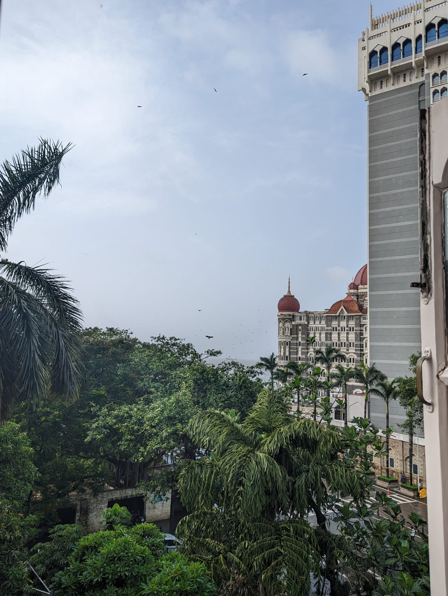

Hi there. I'm a third-year mathematics undergraduate at University College London. I intend to maintain this website to host some of my work, and share some ideas.
Some fundamental results about linear maps on normed spaces are presented. \(p\)-norms for \(0 \lt p \lt 1 \) are then looked at, leading to a study of so-called "quasinormed spaces" (the "norm" is allowed to satisfy a weakened triangle inequality).
Materials
Material concerning analogous results in quasinormed spaces to follow.
A proof of the Fundamental Theorem of Algebra is presented, using ideas from Galois' Theory.
Materials
This was part of a group project. We decided to collect only the results necessary to prove the Fundamental Theorem of Algebra. By recording a few more results, the treatment may be offered in the more general context of ordered fields inside which every positive element has a square root, and every odd-degree polynomial has a zero. This could lead to a study of the "algebraic closure" of a field.
Materials
So far, it appears to me that the process of learning mathematics could be analogous to constructing a building: our instructors offer blueprints and scaffolding, but it is up to us, in our minds, to erect and furnish our own houses. Through sharing, we may welcome into our abodes our fellows; together, we may notice differences in our styles. I think from each person's specially styled brick, laid in collection, emerges our mansion of mathematics. In this section, I will record some ideas on the topic as they change with time, and in doing so, I hope I can contribute to sharing.
I argue here that purely syntactic arguments might not provide enough insight to facilitate an adequate understanding. Whilst I think still relevant for learning in high school, as an undergraduate student, I now experience that in the absence of other understanding, purely syntactic arguments might not take me far enough for this to become an issue.
A selection of problems in the subject to be presented, intended to be accessible to the high-school student.
Materials
It seems that combinatorics was the subject of my first foray into pure mathematics. I think such puzzles have some sort of inherent quality that can make them particularly accessible — for one, they may be appreciated, at least for the most part, without being obscured in notation.
We expore the "tiling" of various (mutilated) chessboards by dominos, looking to employ results from Graph Theory to give conditions on when such a tiling is possible.
Materials
The project culminated in a largely oral presentation. In the near future, I would like to take our ideas into a written text, which I will upload here.